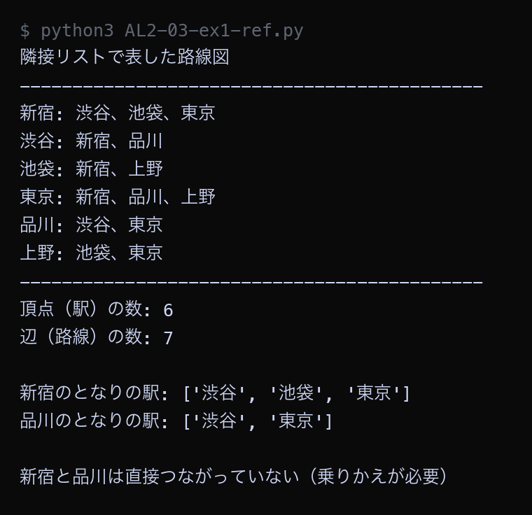
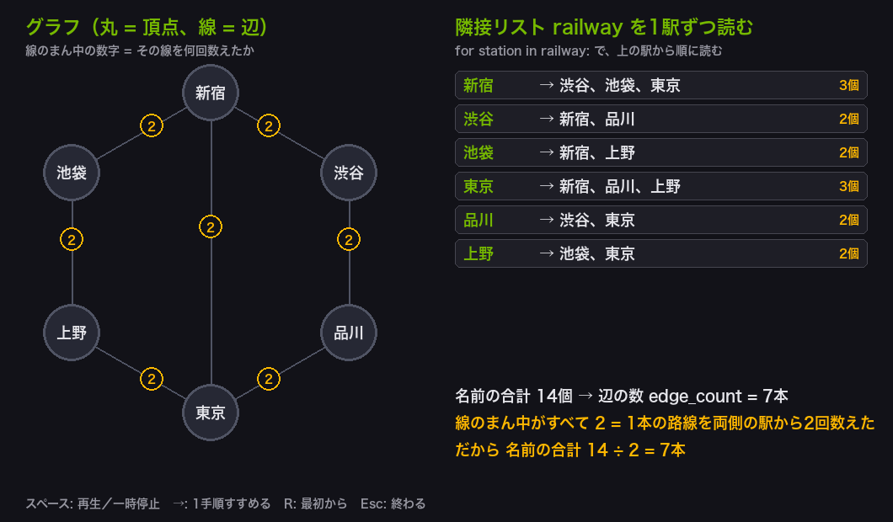
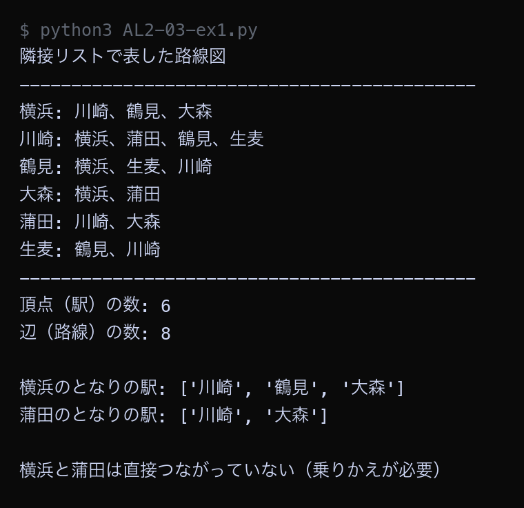
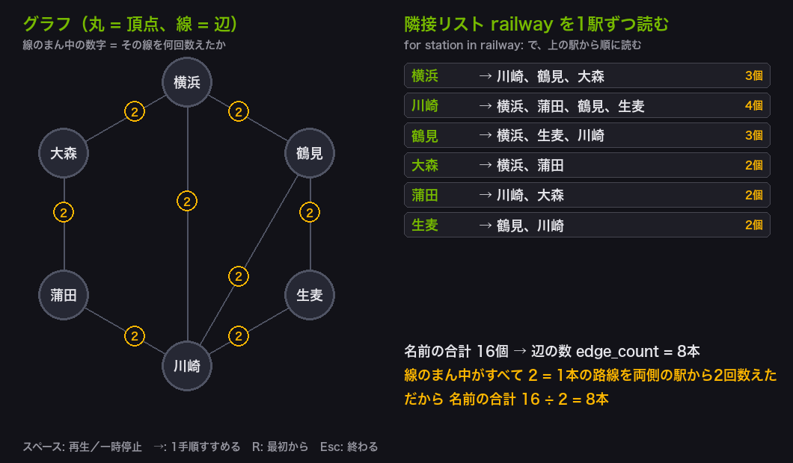
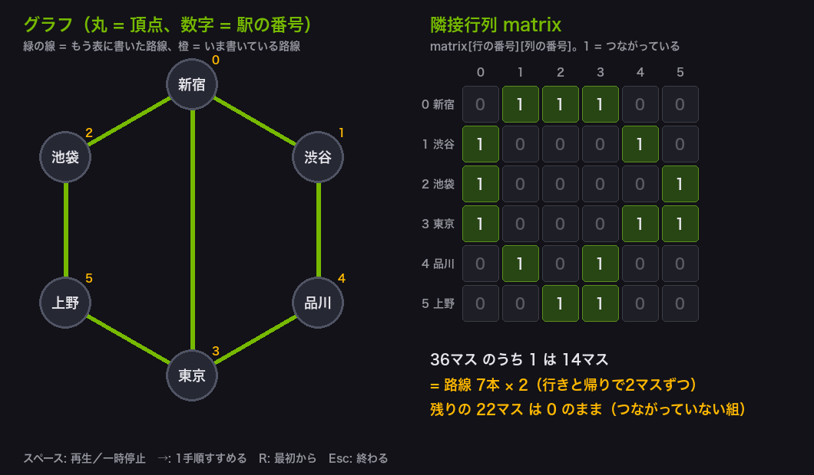
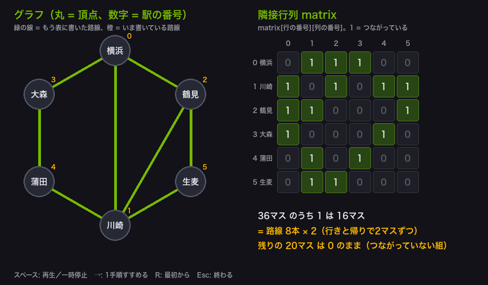

例題
例題1と例題2のコードを実行してください。まず作業フォルダを用意します。
VS Code でフォルダとファイルを用意する
Step 1: 作業フォルダを作る
- デスクトップに AL2 という名前のフォルダを作る（後期の授業ではずっと同じフォルダを使う）
- AL2 フォルダの中に No03 という名前のフォルダを作る
└── AL2/
├── No02/ ← 前回のファイル
└── No03/ ← 第3回はここに保存
Step 2: VS Code でフォルダを開く
- Visual Studio Code を起動する
- メニューから 「ファイル」→「フォルダーを開く」を選ぶ
- Step 1 で作った AL2/No03 フォルダを選んで開く
左側のエクスプローラーに No03 フォルダの中身が表示される（最初は空）。
Step 3: 例題ごとにファイルを作って実行する
- 左側エクスプローラーの No03 の横にある 新しいファイルアイコンをクリック
- ファイル名を入力して Enter（例題1なら
AL2-03-ex1.py） - 例題のコードブロック右上の コピーボタンをクリック
- VS Code の編集画面に 貼り付ける（Ctrl+V / Cmd+V）
- 保存する（Ctrl+S / Cmd+S）
- 右上の ▷（再生ボタン）をクリックして実行する
今回作るファイル（実践）: AL2-03-ex1.py, AL2-03-ex2.py。参考のコードを保存するときは、名前の最後に -ref を付ける
- 参考: コメントなしの完成したコード。まず読んで、全体の流れをつかむ
- 実践: アルゴリズムの要になる行が
____（穴）になっている。 丁寧なコメントと、コードの下の「ヒント」「候補」を見て、自分で埋めてから実行する
ファイル名は、参考が AL2-03-ex1-ref.py（ref = reference、参考）、
実践が AL2-03-ex1.py のように分けます（同じ名前にすると上書きされてしまうため）。
課題で使うのは実践のファイルです。
実行結果がページの画像と同じになれば正解です。ちがえば、どの穴がちがうかを考えて直します。
どうしても分からないときだけ、参考のコードと見比べてください。
グラフを絵で表示する道具（pygame）
今回の例題も、第2回と同じく pygame（パイゲーム: Python で絵やゲームの画面を作る道具）の窓で、 グラフを丸と線で描き、表に1つずつ書き足していくようすをアニメーションで見せます。
1. pygame が入っているか確かめる
第2回で入れた人は、そのまま使えます。VS Code の「ターミナル」→「新しいターミナル」で次の1行を打ちこみ、Enter を押します。
2.6.1 のような数字が出れば入っています。
ターミナル（Windows）
py -c "import pygame; print(pygame.version.ver)"
ModuleNotFoundError と出たら、まだ入っていません。次の1行で入れます
（うまくいかないときは第2回の「うまくいかないとき」の表を見る）。
ターミナル（Windows）
pip install pygame
Mac の人は pip のかわりに pip3、py のかわりに python3 と打つ。
2. 窓の操作（第2回と同じ）
| キー | 動き |
|---|---|
| スペース | 自動で再生／一時停止 |
| →（右矢印） | 1手順だけ進める（標準課題の図を描くときに便利） |
| R | 最初からやり直す |
| Esc または窓の × | 終わる（窓を閉じるとプログラムも終わる） |
窓に絵を描くコードは、各例題ファイルのいちばん下 （「ここから下は、グラフを pygame の窓に絵で表示するための道具です」と書いた行より下）に入っています。そこは読まなくてかまいません。 ファイルは1つだけで動きます。ターミナルに結果が出たあとで窓が開きます。窓が見当たらないときは、タスクバー（Mac は Dock）を見てください。 丸の並べ方は、線の交わりが少なくなるように窓が自動で決めます（紙の路線図と位置がちがっても、つながり方は同じ）。
今回のキーワード
| 用語 | 説明 |
|---|---|
| グラフ | 「点」と「点どうしのつながり」だけでものごとを表す方法。棒グラフや折れ線グラフとは別のもの。 |
| 頂点 | グラフの「点」。駅・人・迷路の1マスなどが頂点になる。ノード（node）とも呼ぶ。 |
| 辺 | グラフの「つながり」。路線・友達関係・となり合うマスの関係などが辺になる。 |
| 隣接 | 辺1本で直接つながっていること。となり同士。路線図なら、乗りかえなしで次に着く駅。 |
| 隣接リスト | 頂点ごとに、となりの頂点を並べた表し方。Pythonでは辞書で書く。路線の数に比例した場所しか使わないので、となりが少ないグラフに向く。 |
| 隣接行列 | たてよこの表を作り、つながっていれば1、なければ0を書く表し方。行列は「たてよこに数を並べた表」。「2点がつながっているか」を1マス見るだけで調べられる。 |
| 辞書 | 「鍵 → 値」の組を集めたPythonの入れもの。railway["新宿"] のように鍵を書くと値が取り出せる。 |
隣接リストで路線図を表す
6つの駅と7本の路線からなる路線図を、隣接リストの形でPythonに書き写します。
隣接リストは辞書を使い、「駅の名前」を鍵、「となりの駅を並べたリスト」を値にします。
railway["新宿"] と書けば、新宿のとなりの駅のリストが取り出せます。
書き写したあとで辺（路線）の数を数え、紙の路線図の7本と同じになるかを確かめます。
同じになれば、書き写しに抜けやまちがいがないと分かります。
| コードの部分 | やっていること |
|---|---|
railway = { ... } | 路線図を隣接リストに書き写す。1本の路線を、両方の駅の行に1回ずつ書く |
for station in railway: | 駅を上から1つずつ読み、となりの駅の数 len(railway[station]) を名前の合計 name_total に足していく |
edge_count = name_total // 2 | 名前の合計 name_total は、同じ路線を両側の駅から2回数えているので、半分にして路線の本数にする |
実行すると、ターミナルに隣接リストと頂点・辺の数が出たあと、窓が開きます。窓の読み方は次のとおりです。
| 窓に表示されるもの | 読み方 |
|---|---|
| 左: グラフ | 丸 = 頂点（駅）、線 = 辺（路線）。白い枠の丸が「いま読んでいる駅」、緑の丸と線がそのとなり |
| 左: 線のまん中の数字 | その線（路線）を何回数えたか。最後はすべて 2 になる |
| 右: 隣接リスト | 読み終えた駅の行。右端の「○個」がその駅のとなりの数 |
| 右下 | ここまでに数えた名前の合計 name_total。最後は // 2 した辺の数 edge_count |
例題1（参考）── 完成したコード。コメントなしで全体の流れをつかむ。保存するなら AL2-03-ex1-ref.py の名前で
AL2-03-ex1-ref.py
Python ── AL2-03-ex1-ref.py railway = { "新宿": ["渋谷", "池袋", "東京"], "渋谷": ["新宿", "品川"], "池袋": ["新宿", "上野"], "東京": ["新宿", "品川", "上野"], "品川": ["渋谷", "東京"], "上野": ["池袋", "東京"], } print("隣接リストで表した路線図") print("-" * 44) for station in railway: neighbors = railway[station] print(f"{station}: " + "、".join(neighbors)) print("-" * 44) vertex_count = len(railway) name_total = 0 count_log = [] for station in railway: name_total = name_total + len(railway[station]) count_log.append((station, name_total)) edge_count = name_total // 2 print("頂点（駅）の数:", vertex_count) print("辺（路線）の数:", edge_count) print() print("新宿のとなりの駅:", railway["新宿"]) print("品川のとなりの駅:", railway["品川"]) print() if "品川" in railway["新宿"]: print("新宿と品川は直接つながっている") else: print("新宿と品川は直接つながっていない（乗りかえが必要）") # ---- ここから下は、グラフを窓に絵で表示するための道具（読まなくてよい） ---- import math import os os.environ.setdefault("PYGAME_HIDE_SUPPORT_PROMPT", "1") import pygame WIDTH, HEIGHT = 1060, 620 STEP_MS = 900 BG = (18, 18, 24) LINE = (80, 84, 100) NODE = (38, 40, 52) TEXT = (230, 230, 235) SUB = (150, 150, 160) GREEN = (118, 185, 0) AMBER = (255, 184, 0) RED = (255, 110, 110) FONT_FILES = [ "/System/Library/Fonts/ヒラギノ角ゴシック W6.ttc", "/System/Library/Fonts/ヒラギノ角ゴシック W3.ttc", "/System/Library/Fonts/Hiragino Sans GB.ttc", "C:/Windows/Fonts/meiryo.ttc", "C:/Windows/Fonts/YuGothM.ttc", "C:/Windows/Fonts/msgothic.ttc", ] FONT_NAMES = "hiraginosans,yugothic,meiryo,msgothic,notosanscjkjp,notosansjp" def _font(size, bold=False): for path in FONT_FILES: if os.path.exists(path): return pygame.font.Font(path, size) return pygame.font.SysFont(FONT_NAMES, size, bold=bold) def _crossings(order, edges): """円の上に order の順で頂点を並べたとき、線どうしが何回交わるかを数える。""" at = {name: i for i, name in enumerate(order)} count = 0 for i, (a, b) in enumerate(edges): lo, hi = sorted((at[a], at[b])) for c, d in edges[i + 1:]: if len({a, b, c, d}) < 4: continue inside = (lo < at[c] < hi) + (lo < at[d] < hi) count += inside == 1 return count def _layout(names, edges, cx=250, cy=300, radius=190): """頂点を円の上に等間隔で並べる（いちばん上から時計回り）。 頂点が8個以下なら、線の交わりがいちばん少なくなる並べ方を全部試して選ぶ。""" order = list(names) if 3 < len(order) <= 8: from itertools import permutations best = None for rest in permutations(order[1:]): cand = [order[0], *rest] k = _crossings(cand, edges) if best is None or k < best[0]: best = (k, cand) order = best[1] n = len(order) return {name: (cx + radius * math.sin(2 * math.pi * i / n), cy - radius * math.cos(2 * math.pi * i / n)) for i, name in enumerate(order)} def _draw_graph(screen, fonts, names, edges, pos, hot_edges=(), hot_nodes=(), current=None, tally=None, numbers=False, focus_edge=None): """丸（頂点）と線（辺）を描く。hot_* は緑にする辺・頂点、current は白い枠をつける頂点、 focus_edge は橙で太く描く辺。tally を渡すと、線のまん中に「その線を何回数えたか」を書く。 numbers=True なら頂点の番号も書く。""" big, mid, small = fonts for a, b in edges: hot = (a, b) in hot_edges or (b, a) in hot_edges pygame.draw.line(screen, GREEN if hot else LINE, pos[a], pos[b], 6 if hot else 2) if focus_edge is not None: a, b = focus_edge pygame.draw.line(screen, AMBER, pos[a], pos[b], 9) if tally is not None: for a, b in edges: k = tally.get((a, b), 0) + tally.get((b, a), 0) if k == 0: continue mx, my = pos[a][0] * 0.58 + pos[b][0] * 0.42, pos[a][1] * 0.58 + pos[b][1] * 0.42 color = AMBER if k >= 2 else GREEN pygame.draw.circle(screen, BG, (mx, my), 14) pygame.draw.circle(screen, color, (mx, my), 14, 2) t = small.render(f"{k}", True, color) screen.blit(t, (mx - t.get_width() / 2, my - t.get_height() / 2)) for i, name in enumerate(names): x, y = pos[name] ring = (255, 255, 255) if name == current else (GREEN if name in hot_nodes else LINE) if focus_edge is not None and name in focus_edge: ring = AMBER pygame.draw.circle(screen, NODE, (x, y), 34) pygame.draw.circle(screen, ring, (x, y), 34, 5 if name == current else 3) t = mid.render(name, True, TEXT) if t.get_width() > 62: t = small.render(name, True, TEXT) screen.blit(t, (x - t.get_width() / 2, y - t.get_height() / 2)) if numbers: n = small.render(str(i), True, AMBER) screen.blit(n, (x + 26, y - 40)) def _loop(screen, fonts, last_step, draw): """窓のくり返し処理。draw(k) が k 手順目の画面を描く。""" capture = os.environ.get("AL2_CAPTURE") k = last_step if capture else 0 playing = False clock = pygame.time.Clock() last = pygame.time.get_ticks() while True: for event in pygame.event.get(): if event.type == pygame.QUIT: pygame.quit() return if event.type == pygame.KEYDOWN: if event.key == pygame.K_ESCAPE: pygame.quit() return if event.key == pygame.K_SPACE: playing = not playing if event.key == pygame.K_RIGHT and k < last_step: k += 1 playing = False if event.key == pygame.K_r: k, playing = 0, False if playing and pygame.time.get_ticks() - last >= STEP_MS: last = pygame.time.get_ticks() if k < last_step: k += 1 else: playing = False screen.fill(BG) draw(k) hint = fonts[2].render("スペース: 再生／一時停止 →: 1手順すすめる R: 最初から Esc: 終わる", True, SUB) screen.blit(hint, (30, HEIGHT - 30)) pygame.display.flip() if capture: pygame.image.save(screen, capture) pygame.quit() return clock.tick(30) def show_window(railway, count_log, edge_count): """隣接リストを1駅ずつ読み、名前を数えていくようすをアニメーション表示する。窓を閉じると終わる。""" pygame.init() screen = pygame.display.set_mode((WIDTH, HEIGHT)) pygame.display.set_caption("隣接リストを読む") fonts = (_font(22, True), _font(18), _font(14)) big, mid, small = fonts names = list(railway) missing = [] for a in railway: for b in railway[a]: if b not in railway and b not in missing: missing.append(b) names = names + missing edges = [] for a in railway: for b in railway[a]: if (a, b) not in edges and (b, a) not in edges: edges.append((a, b)) pos = _layout(names, edges) n = len(count_log) row_h = min(40, (HEIGHT - 260) // max(n, 1)) def draw(k): done = k > n step = min(k, n) tally = {} for s, _ in count_log[:step]: for nb in railway[s]: tally[(s, nb)] = 1 current = None if (k == 0 or done) else count_log[k - 1][0] hot_nodes = railway[current] if current else () hot_edges = [(current, nb) for nb in railway[current]] if current else () screen.blit(big.render("グラフ（丸 = 頂点、線 = 辺）", True, GREEN), (30, 20)) screen.blit(small.render("線のまん中の数字 = その線を何回数えたか", True, SUB), (30, 52)) _draw_graph(screen, fonts, names, edges, pos, hot_edges, hot_nodes, current, tally) x0 = 540 screen.blit(big.render("隣接リスト railway を1駅ずつ読む", True, GREEN), (x0, 20)) screen.blit(small.render("for station in railway: で、上の駅から順に読む", True, SUB), (x0, 52)) for i, (s, total) in enumerate(count_log[:step]): y = 84 + i * row_h on = s == current box = pygame.Rect(x0, y, 490, row_h - 6) pygame.draw.rect(screen, (30, 30, 38), box, border_radius=6) pygame.draw.rect(screen, (255, 255, 255) if on else (70, 70, 80), box, width=3 if on else 1, border_radius=6) font = mid if row_h >= 34 else small ty = y + (row_h - 6 - font.get_height()) // 2 screen.blit(font.render(s, True, GREEN), (x0 + 10, ty)) screen.blit(font.render("→ " + "、".join(railway[s]), True, TEXT), (x0 + 100, ty)) t = small.render(f"{len(railway[s])}個", True, AMBER) screen.blit(t, (x0 + 480 - t.get_width(), y + (row_h - 6 - t.get_height()) // 2)) by = HEIGHT - 160 info3, color = "", AMBER if k == 0: info, info2, color = "スペースで開始／→で1手順", "", SUB elif not done: info = f"手順{k} {current} のとなりの駅 {len(railway[current])}個 を数える" info2, color = f"ここまでに数えた名前の合計 name_total = {count_log[k - 1][1]}", SUB else: info = f"名前の合計 {count_log[-1][1]}個 → 辺の数 edge_count = {edge_count}本" once = [e for e in edges if tally.get(e, 0) + tally.get((e[1], e[0]), 0) < 2] if missing: info2, color = f"「{'、'.join(missing)}」が railway の左側（鍵）にない", RED info3 = "→ その駅の行を足して、となりの駅を書く" elif once: info2, color = "数字が 1 の線がある = 片方の駅の行にしか書いていない", RED info3 = f"→ {once[0][1]} の行に {once[0][0]} を足す（ほかの 1 の線も同じ）" elif edge_count != len(edges): info2, color = f"線は {len(edges)}本 なのに edge_count が {edge_count}本", RED info3 = "→ 名前の合計の数え方と、半分にする式を見直す" else: info2 = f"線のまん中がすべて 2 = 1本の路線を両側の駅から2回数えた" info3 = f"だから 名前の合計 {count_log[-1][1]} ÷ 2 = {edge_count}本" screen.blit(mid.render(info, True, TEXT), (x0, by)) screen.blit(mid.render(info2, True, color), (x0, by + 32)) screen.blit(mid.render(info3, True, color), (x0, by + 64)) _loop(screen, fonts, n + 1, draw) show_window(railway, count_log, edge_count)
▶ 実行結果（ターミナル）

▶ 開いた窓（最後まで進めたところ）

6つの駅それぞれについて、となりの駅が一覧で表示されました。railway["新宿"] と書くだけで、新宿のとなりの駅3つがすぐ取り出せています。窓の右下を見ると、名前の合計は 14個、半分にした路線の数は 7本です。グラフの線のまん中の数字がすべて 2 になっているのは、1本の路線（たとえば新宿—渋谷）を「新宿の行」と「渋谷の行」の両方から数えたためです。だから // 2 で半分にします。
例題1（実践）── 参考と同じ方法を別のデータで。要の行が ____ になっているので、コメントを読みながら埋めて、AL2-03-ex1.py の名前で保存して実行する
AL2-03-ex1.py
Python ── AL2-03-ex1.py # グラフを「隣接リスト」で表す # グラフ = 「点（頂点）」と「点どうしのつながり（辺）」だけでものごとを表す方法 # 隣接リスト = それぞれの頂点について「となり（直接つながっている頂点）」を並べた表 # 隣接（りんせつ）は「となり合っている」「直接つながっている」という意味 # 6つの駅と、駅どうしをつなぐ路線をグラフにする。頂点 = 駅、辺 = 路線 # 辞書 { 鍵: 値, ... } を使う。鍵 = 駅の名前、値 = となりの駅を並べたリスト # 例 railway["横浜"] と書くと、横浜のとなりの駅のリスト ["川崎", "鶴見", "大森"] が取り出せる # 路線は行きも帰りも通れるので、横浜の行に「川崎」を書いたら、川崎の行にも「横浜」を書く railway = { "横浜": ["川崎", "鶴見", "大森"], "川崎": ["横浜", "蒲田", "鶴見", "生麦"], "鶴見": ["横浜", "生麦", "川崎"], "大森": ["横浜", "蒲田"], "蒲田": ["川崎", "大森"], "生麦": ["鶴見", "川崎"], } print("隣接リストで表した路線図") print("-" * 44) # for station in railway: で、辞書の鍵（駅の名前）を上から1つずつ station に入れてくり返す for station in railway: neighbors = railway[station] # その駅のとなりの駅のリスト print(f"{station}: " + "、".join(neighbors)) # "、".join(リスト) はリストの中身を「、」でつないだ文字にする print("-" * 44) # 頂点の数 = 辞書の鍵の数。len(辞書) で数えられる vertex_count = len(railway) # 辺（路線）の数を数える。 # なぜ数えるか: 紙の路線図の線の本数と同じになれば、書き写しに抜けやまちがいがないと確かめられる # まず、各駅の「となりの駅の数」を全部足して、隣接リストに書いた名前の合計 name_total を求める name_total = 0 count_log = [] # 駅ごとの「ここまでの合計」の記録（窓の表示に使う） for station in railway: # len(リスト) はリストに入っている個数。横浜なら3 name_total = ____ # ← 穴1 # append(x) はリストの最後に x を足す。(station, name_total) は2つを1組にしたもの count_log.append((station, name_total)) # name_total はまだ辺の数ではない。1本の路線（例 横浜—川崎）は、横浜の行と川崎の行の # 両方に書かれているので2回数えている。だから半分にする（// は「割り算して、あまりを捨てる」記号） edge_count = ____ # ← 穴2 print("頂点（駅）の数:", vertex_count) print("辺（路線）の数:", edge_count) print() # となりの駅をすぐに取り出せることが、隣接リストの長所 print("横浜のとなりの駅:", railway["横浜"]) print("蒲田のとなりの駅:", railway["蒲田"]) print() # 「横浜と蒲田は直接つながっているか」を調べる # A in リスト は「A がリストの中にあれば True（はい）」。横浜のとなりの一覧に蒲田があるかを見る if "蒲田" in railway["横浜"]: print("横浜と蒲田は直接つながっている") else: print("横浜と蒲田は直接つながっていない（乗りかえが必要）") # ============================================================ # ここから下は、グラフを pygame の窓に絵で表示するための道具です。 # 中身は読まなくてかまいません（アルゴリズムは上の部分にあります）。 # 操作: スペース = 再生／一時停止 → = 1手順すすめる R = 最初から Esc = 終わる # ============================================================ import math import os os.environ.setdefault("PYGAME_HIDE_SUPPORT_PROMPT", "1") # pygame のあいさつ文を出さない import pygame WIDTH, HEIGHT = 1060, 620 # 窓の大きさ（ピクセル） STEP_MS = 900 # 1手順あたりの時間（ミリ秒） BG = (18, 18, 24) LINE = (80, 84, 100) NODE = (38, 40, 52) TEXT = (230, 230, 235) SUB = (150, 150, 160) GREEN = (118, 185, 0) AMBER = (255, 184, 0) RED = (255, 110, 110) # 日本語が出せるフォントの場所（Mac → Windows の順にさがす） FONT_FILES = [ "/System/Library/Fonts/ヒラギノ角ゴシック W6.ttc", "/System/Library/Fonts/ヒラギノ角ゴシック W3.ttc", "/System/Library/Fonts/Hiragino Sans GB.ttc", "C:/Windows/Fonts/meiryo.ttc", "C:/Windows/Fonts/YuGothM.ttc", "C:/Windows/Fonts/msgothic.ttc", ] FONT_NAMES = "hiraginosans,yugothic,meiryo,msgothic,notosanscjkjp,notosansjp" def _font(size, bold=False): for path in FONT_FILES: if os.path.exists(path): return pygame.font.Font(path, size) return pygame.font.SysFont(FONT_NAMES, size, bold=bold) def _crossings(order, edges): """円の上に order の順で頂点を並べたとき、線どうしが何回交わるかを数える。""" at = {name: i for i, name in enumerate(order)} count = 0 for i, (a, b) in enumerate(edges): lo, hi = sorted((at[a], at[b])) for c, d in edges[i + 1:]: if len({a, b, c, d}) < 4: continue inside = (lo < at[c] < hi) + (lo < at[d] < hi) count += inside == 1 return count def _layout(names, edges, cx=250, cy=300, radius=190): """頂点を円の上に等間隔で並べる（いちばん上から時計回り）。 頂点が8個以下なら、線の交わりがいちばん少なくなる並べ方を全部試して選ぶ。""" order = list(names) if 3 < len(order) <= 8: from itertools import permutations best = None for rest in permutations(order[1:]): cand = [order[0], *rest] k = _crossings(cand, edges) if best is None or k < best[0]: best = (k, cand) order = best[1] n = len(order) return {name: (cx + radius * math.sin(2 * math.pi * i / n), cy - radius * math.cos(2 * math.pi * i / n)) for i, name in enumerate(order)} def _draw_graph(screen, fonts, names, edges, pos, hot_edges=(), hot_nodes=(), current=None, tally=None, numbers=False, focus_edge=None): """丸（頂点）と線（辺）を描く。hot_* は緑にする辺・頂点、current は白い枠をつける頂点、 focus_edge は橙で太く描く辺。tally を渡すと、線のまん中に「その線を何回数えたか」を書く。 numbers=True なら頂点の番号も書く。""" big, mid, small = fonts for a, b in edges: hot = (a, b) in hot_edges or (b, a) in hot_edges pygame.draw.line(screen, GREEN if hot else LINE, pos[a], pos[b], 6 if hot else 2) if focus_edge is not None: a, b = focus_edge pygame.draw.line(screen, AMBER, pos[a], pos[b], 9) if tally is not None: for a, b in edges: k = tally.get((a, b), 0) + tally.get((b, a), 0) if k == 0: continue # 線のまん中より少し a 寄りに書く（まん中どうしが重なる線があっても読めるように） mx, my = pos[a][0] * 0.58 + pos[b][0] * 0.42, pos[a][1] * 0.58 + pos[b][1] * 0.42 color = AMBER if k >= 2 else GREEN pygame.draw.circle(screen, BG, (mx, my), 14) pygame.draw.circle(screen, color, (mx, my), 14, 2) t = small.render(f"{k}", True, color) screen.blit(t, (mx - t.get_width() / 2, my - t.get_height() / 2)) for i, name in enumerate(names): x, y = pos[name] ring = (255, 255, 255) if name == current else (GREEN if name in hot_nodes else LINE) if focus_edge is not None and name in focus_edge: ring = AMBER pygame.draw.circle(screen, NODE, (x, y), 34) pygame.draw.circle(screen, ring, (x, y), 34, 5 if name == current else 3) t = mid.render(name, True, TEXT) if t.get_width() > 62: # 長い名前は小さい文字にして丸に収める t = small.render(name, True, TEXT) screen.blit(t, (x - t.get_width() / 2, y - t.get_height() / 2)) if numbers: n = small.render(str(i), True, AMBER) screen.blit(n, (x + 26, y - 40)) def _loop(screen, fonts, last_step, draw): """窓のくり返し処理。draw(k) が k 手順目の画面を描く。""" capture = os.environ.get("AL2_CAPTURE") # 授業ページの画像を作るときだけ使う k = last_step if capture else 0 playing = False clock = pygame.time.Clock() last = pygame.time.get_ticks() while True: for event in pygame.event.get(): if event.type == pygame.QUIT: pygame.quit() return if event.type == pygame.KEYDOWN: if event.key == pygame.K_ESCAPE: pygame.quit() return if event.key == pygame.K_SPACE: playing = not playing if event.key == pygame.K_RIGHT and k < last_step: k += 1 playing = False if event.key == pygame.K_r: k, playing = 0, False if playing and pygame.time.get_ticks() - last >= STEP_MS: last = pygame.time.get_ticks() if k < last_step: k += 1 else: playing = False screen.fill(BG) draw(k) hint = fonts[2].render("スペース: 再生／一時停止 →: 1手順すすめる R: 最初から Esc: 終わる", True, SUB) screen.blit(hint, (30, HEIGHT - 30)) pygame.display.flip() if capture: pygame.image.save(screen, capture) pygame.quit() return clock.tick(30) def show_window(railway, count_log, edge_count): """隣接リストを1駅ずつ読み、名前を数えていくようすをアニメーション表示する。窓を閉じると終わる。""" pygame.init() screen = pygame.display.set_mode((WIDTH, HEIGHT)) pygame.display.set_caption("隣接リストを読む") fonts = (_font(22, True), _font(18), _font(14)) big, mid, small = fonts names = list(railway) # となりの一覧には書いたのに、鍵（左側）に書き忘れた駅も、丸として描けるように足しておく missing = [] for a in railway: for b in railway[a]: if b not in railway and b not in missing: missing.append(b) names = names + missing edges = [] # 線を1本ずつ（同じ線を2回入れない） for a in railway: for b in railway[a]: if (a, b) not in edges and (b, a) not in edges: edges.append((a, b)) pos = _layout(names, edges) n = len(count_log) row_h = min(40, (HEIGHT - 260) // max(n, 1)) # 駅が多いときは行の間をつめる def draw(k): done = k > n step = min(k, n) tally = {} for s, _ in count_log[:step]: for nb in railway[s]: tally[(s, nb)] = 1 current = None if (k == 0 or done) else count_log[k - 1][0] hot_nodes = railway[current] if current else () hot_edges = [(current, nb) for nb in railway[current]] if current else () screen.blit(big.render("グラフ（丸 = 頂点、線 = 辺）", True, GREEN), (30, 20)) screen.blit(small.render("線のまん中の数字 = その線を何回数えたか", True, SUB), (30, 52)) _draw_graph(screen, fonts, names, edges, pos, hot_edges, hot_nodes, current, tally) x0 = 540 screen.blit(big.render("隣接リスト railway を1駅ずつ読む", True, GREEN), (x0, 20)) screen.blit(small.render("for station in railway: で、上の駅から順に読む", True, SUB), (x0, 52)) for i, (s, total) in enumerate(count_log[:step]): y = 84 + i * row_h on = s == current box = pygame.Rect(x0, y, 490, row_h - 6) pygame.draw.rect(screen, (30, 30, 38), box, border_radius=6) pygame.draw.rect(screen, (255, 255, 255) if on else (70, 70, 80), box, width=3 if on else 1, border_radius=6) font = mid if row_h >= 34 else small ty = y + (row_h - 6 - font.get_height()) // 2 screen.blit(font.render(s, True, GREEN), (x0 + 10, ty)) screen.blit(font.render("→ " + "、".join(railway[s]), True, TEXT), (x0 + 100, ty)) t = small.render(f"{len(railway[s])}個", True, AMBER) screen.blit(t, (x0 + 480 - t.get_width(), y + (row_h - 6 - t.get_height()) // 2)) by = HEIGHT - 160 info3, color = "", AMBER if k == 0: info, info2, color = "スペースで開始／→で1手順", "", SUB elif not done: info = f"手順{k} {current} のとなりの駅 {len(railway[current])}個 を数える" info2, color = f"ここまでに数えた名前の合計 name_total = {count_log[k - 1][1]}", SUB else: info = f"名前の合計 {count_log[-1][1]}個 → 辺の数 edge_count = {edge_count}本" once = [e for e in edges if tally.get(e, 0) + tally.get((e[1], e[0]), 0) < 2] if missing: info2, color = f"「{'、'.join(missing)}」が railway の左側（鍵）にない", RED info3 = "→ その駅の行を足して、となりの駅を書く" elif once: info2, color = "数字が 1 の線がある = 片方の駅の行にしか書いていない", RED info3 = f"→ {once[0][1]} の行に {once[0][0]} を足す（ほかの 1 の線も同じ）" elif edge_count != len(edges): info2, color = f"線は {len(edges)}本 なのに edge_count が {edge_count}本", RED info3 = "→ 名前の合計の数え方と、半分にする式を見直す" else: info2 = f"線のまん中がすべて 2 = 1本の路線を両側の駅から2回数えた" info3 = f"だから 名前の合計 {count_log[-1][1]} ÷ 2 = {edge_count}本" screen.blit(mid.render(info, True, TEXT), (x0, by)) screen.blit(mid.render(info2, True, color), (x0, by + 32)) screen.blit(mid.render(info3, True, color), (x0, by + 64)) _loop(screen, fonts, n + 1, draw) # --- 窓を開いて、隣接リストを1駅ずつ読むようすをアニメーション表示する --- # 左にグラフ（丸と線）、右に隣接リスト。線のまん中の数字は「その線を何回数えたか」。 # スペースで再生／一時停止、→ で1手順ずつ進む。窓を閉じるとプログラムが終わる show_window(railway, count_log, edge_count)
穴埋め（____ を埋めてから実行する）
| 穴 | ヒント | 候補（1つが正解） |
|---|---|---|
| 穴1 | その駅のとなりの駅の数（その駅の行に書いた名前の数）を足す | A. len(railway)B. name_total + len(railway[station])C. name_total + 1 |
| 穴2 | 1本の路線は両方の駅の行から数えられるので、名前の合計を半分にする | A. name_total // 2B. name_totalC. name_total * 2 |
埋めたら保存して実行し、下の実行結果と同じになるか見比べる。ちがえば、どの穴がちがうかを考えて直す（上の「参考」のコードと見比べてもよい）。 答えは次回の授業の時刻に、ページのいちばん下の「解答例」に出ます。
▶ 実行結果（ターミナル）

▶ 開いた窓（最後まで進めたところ）

埋めて実行した結果が、この画像と同じになれば正解です。ちがうときは、どの穴がちがうかを考えて直してください。
隣接行列で同じ路線図を表す
例題1とまったく同じ路線図を、今度は隣接行列の形で書き写します。
6つの駅があるので、たて6マス・よこ6マスの表を作ります。駅には stations の中の順番で 0〜5 の番号をつけ、
その番号を表の行と列の番号に使います（新宿 = 0、渋谷 = 1、…）。
| コードの部分 | やっていること |
|---|---|
matrix = [[0 for j in range(n)] for i in range(n)] | 全部のマスが0の、n×n の表を作る |
for a, b in lines: | 路線の一覧を1本ずつ読む（1章の「路線を1本ずつ書き写す」の図と同じ） |
matrix[i][j] = 1 と matrix[j][i] = 1 | 行きと帰りの2マスを1にする |
matrix[i][j] を見る | 「i番と j番の駅はつながっているか」が、表の1マスを見るだけで分かる |
実行すると、ターミナルに表とマスの数の比較が出たあと、窓が開きます。窓の読み方は次のとおりです。
| 窓に表示されるもの | 読み方 |
|---|---|
| 左: グラフ | 丸の右上の数字が駅の番号。橙の線が「いま書き写している路線」、緑の線が「もう書き写した路線」 |
| 右: 隣接行列 | matrix[行の番号][列の番号]。橙の枠が、いま1にした2マス |
| 右下 | いまの手順で1にしたマスの場所。最後は「1 のマスの数 = 路線の数 × 2」 |
例題2（参考）── 完成したコード。コメントなしで全体の流れをつかむ。保存するなら AL2-03-ex2-ref.py の名前で
AL2-03-ex2-ref.py
Python ── AL2-03-ex2-ref.py stations = ["新宿", "渋谷", "池袋", "東京", "品川", "上野"] lines = [ ("新宿", "渋谷"), ("新宿", "池袋"), ("新宿", "東京"), ("渋谷", "品川"), ("東京", "品川"), ("東京", "上野"), ("池袋", "上野"), ] n = len(stations) matrix = [[0 for j in range(n)] for i in range(n)] matrix_log = [] for a, b in lines: i = stations.index(a) j = stations.index(b) matrix[i][j] = 1 matrix[j][i] = 1 matrix_log.append([row[:] for row in matrix]) print("駅の番号") for i in range(n): print(f" {i} = {stations[i]}") print() print("隣接行列（1 = つながっている、0 = つながっていない）") print("-" * 40) width = max(len(name) for name in stations) print(" " * (6 + 2 * width) + "".join(f"{j:>4}" for j in range(n))) for i in range(n): name = stations[i].ljust(width, " ") row = "".join(f"{matrix[i][j]:>4}" for j in range(n)) print(f" {i} {name} " + row) print("-" * 40) print() a = "新宿" b = "品川" i = stations.index(a) j = stations.index(b) print(f"{a} と {b} はつながっているか → matrix[{i}][{j}] =", matrix[i][j]) a = "新宿" b = "東京" i = stations.index(a) j = stations.index(b) print(f"{a} と {b} はつながっているか → matrix[{i}][{j}] =", matrix[i][j]) print() matrix_cells = n * n list_names = len(lines) * 2 print("隣接行列が書くマスの数:", matrix_cells, "マス（駅の数の2乗）") print("隣接リストが書く名前の数:", list_names, "個（路線の数の2倍）") print() print("駅の数を増やしたときの比較（となりの駅が平均3つの場合）") print("-" * 48) print(" 駅の数 隣接行列のマス数 隣接リストの名前の数") for count in [10, 100, 1000, 10000]: print(f"{count:>10} {count*count:>16} {count*3:>18}") print("-" * 48) # ---- ここから下は、グラフを窓に絵で表示するための道具（読まなくてよい） ---- import math import os os.environ.setdefault("PYGAME_HIDE_SUPPORT_PROMPT", "1") import pygame WIDTH, HEIGHT = 1060, 620 STEP_MS = 900 BG = (18, 18, 24) LINE = (80, 84, 100) NODE = (38, 40, 52) TEXT = (230, 230, 235) SUB = (150, 150, 160) GREEN = (118, 185, 0) AMBER = (255, 184, 0) RED = (255, 110, 110) FONT_FILES = [ "/System/Library/Fonts/ヒラギノ角ゴシック W6.ttc", "/System/Library/Fonts/ヒラギノ角ゴシック W3.ttc", "/System/Library/Fonts/Hiragino Sans GB.ttc", "C:/Windows/Fonts/meiryo.ttc", "C:/Windows/Fonts/YuGothM.ttc", "C:/Windows/Fonts/msgothic.ttc", ] FONT_NAMES = "hiraginosans,yugothic,meiryo,msgothic,notosanscjkjp,notosansjp" def _font(size, bold=False): for path in FONT_FILES: if os.path.exists(path): return pygame.font.Font(path, size) return pygame.font.SysFont(FONT_NAMES, size, bold=bold) def _crossings(order, edges): """円の上に order の順で頂点を並べたとき、線どうしが何回交わるかを数える。""" at = {name: i for i, name in enumerate(order)} count = 0 for i, (a, b) in enumerate(edges): lo, hi = sorted((at[a], at[b])) for c, d in edges[i + 1:]: if len({a, b, c, d}) < 4: continue inside = (lo < at[c] < hi) + (lo < at[d] < hi) count += inside == 1 return count def _layout(names, edges, cx=250, cy=300, radius=190): """頂点を円の上に等間隔で並べる（いちばん上から時計回り）。 頂点が8個以下なら、線の交わりがいちばん少なくなる並べ方を全部試して選ぶ。""" order = list(names) if 3 < len(order) <= 8: from itertools import permutations best = None for rest in permutations(order[1:]): cand = [order[0], *rest] k = _crossings(cand, edges) if best is None or k < best[0]: best = (k, cand) order = best[1] n = len(order) return {name: (cx + radius * math.sin(2 * math.pi * i / n), cy - radius * math.cos(2 * math.pi * i / n)) for i, name in enumerate(order)} def _draw_graph(screen, fonts, names, edges, pos, hot_edges=(), hot_nodes=(), current=None, tally=None, numbers=False, focus_edge=None): """丸（頂点）と線（辺）を描く。hot_* は緑にする辺・頂点、current は白い枠をつける頂点、 focus_edge は橙で太く描く辺。tally を渡すと、線のまん中に「その線を何回数えたか」を書く。 numbers=True なら頂点の番号も書く。""" big, mid, small = fonts for a, b in edges: hot = (a, b) in hot_edges or (b, a) in hot_edges pygame.draw.line(screen, GREEN if hot else LINE, pos[a], pos[b], 6 if hot else 2) if focus_edge is not None: a, b = focus_edge pygame.draw.line(screen, AMBER, pos[a], pos[b], 9) if tally is not None: for a, b in edges: k = tally.get((a, b), 0) + tally.get((b, a), 0) if k == 0: continue mx, my = pos[a][0] * 0.58 + pos[b][0] * 0.42, pos[a][1] * 0.58 + pos[b][1] * 0.42 color = AMBER if k >= 2 else GREEN pygame.draw.circle(screen, BG, (mx, my), 14) pygame.draw.circle(screen, color, (mx, my), 14, 2) t = small.render(f"{k}", True, color) screen.blit(t, (mx - t.get_width() / 2, my - t.get_height() / 2)) for i, name in enumerate(names): x, y = pos[name] ring = (255, 255, 255) if name == current else (GREEN if name in hot_nodes else LINE) if focus_edge is not None and name in focus_edge: ring = AMBER pygame.draw.circle(screen, NODE, (x, y), 34) pygame.draw.circle(screen, ring, (x, y), 34, 5 if name == current else 3) t = mid.render(name, True, TEXT) if t.get_width() > 62: t = small.render(name, True, TEXT) screen.blit(t, (x - t.get_width() / 2, y - t.get_height() / 2)) if numbers: n = small.render(str(i), True, AMBER) screen.blit(n, (x + 26, y - 40)) def _loop(screen, fonts, last_step, draw): """窓のくり返し処理。draw(k) が k 手順目の画面を描く。""" capture = os.environ.get("AL2_CAPTURE") k = last_step if capture else 0 playing = False clock = pygame.time.Clock() last = pygame.time.get_ticks() while True: for event in pygame.event.get(): if event.type == pygame.QUIT: pygame.quit() return if event.type == pygame.KEYDOWN: if event.key == pygame.K_ESCAPE: pygame.quit() return if event.key == pygame.K_SPACE: playing = not playing if event.key == pygame.K_RIGHT and k < last_step: k += 1 playing = False if event.key == pygame.K_r: k, playing = 0, False if playing and pygame.time.get_ticks() - last >= STEP_MS: last = pygame.time.get_ticks() if k < last_step: k += 1 else: playing = False screen.fill(BG) draw(k) hint = fonts[2].render("スペース: 再生／一時停止 →: 1手順すすめる R: 最初から Esc: 終わる", True, SUB) screen.blit(hint, (30, HEIGHT - 30)) pygame.display.flip() if capture: pygame.image.save(screen, capture) pygame.quit() return clock.tick(30) def show_window(stations, lines, matrix_log): """路線を1本ずつ読み、隣接行列に1を書いていくようすをアニメーション表示する。窓を閉じると終わる。""" pygame.init() screen = pygame.display.set_mode((WIDTH, HEIGHT)) pygame.display.set_caption("隣接行列に書き写す") fonts = (_font(22, True), _font(18), _font(14)) big, mid, small = fonts pos = _layout(stations, lines) n = len(stations) steps = len(matrix_log) cell = max(28, min(52, 380 // n)) empty = [[0] * n for _ in range(n)] def draw(k): done = k > steps step = min(k, steps) now = matrix_log[step - 1] if step > 0 else empty before = matrix_log[step - 2] if step > 1 else empty focus = None if (k == 0 or done) else lines[k - 1] screen.blit(big.render("グラフ（丸 = 頂点、数字 = 駅の番号）", True, GREEN), (30, 20)) screen.blit(small.render("緑の線 = もう表に書いた路線、橙 = いま書いている路線", True, SUB), (30, 52)) _draw_graph(screen, fonts, stations, lines, pos, hot_edges=lines[:step], numbers=True, focus_edge=focus) x0, y0 = 600, 110 screen.blit(big.render("隣接行列 matrix", True, GREEN), (x0 - 40, 20)) screen.blit(small.render("matrix[行の番号][列の番号]。1 = つながっている", True, SUB), (x0 - 40, 52)) for j in range(n): t = small.render(str(j), True, SUB) screen.blit(t, (x0 + j * cell + cell / 2 - t.get_width() / 2, y0 - 24)) for i in range(n): t = small.render(f"{i} {stations[i]}", True, SUB) screen.blit(t, (x0 - 8 - t.get_width(), y0 + i * cell + cell / 2 - t.get_height() / 2)) for j in range(n): v = now[i][j] new = (not done) and v != before[i][j] rect = pygame.Rect(x0 + j * cell + 2, y0 + i * cell + 2, cell - 4, cell - 4) fill = (40, 70, 20) if v else (30, 30, 38) pygame.draw.rect(screen, fill, rect, border_radius=5) pygame.draw.rect(screen, AMBER if new else ((90, 140, 30) if v else (60, 60, 70)), rect, width=4 if new else 1, border_radius=5) t = mid.render(str(v), True, TEXT if v else (90, 90, 100)) screen.blit(t, (rect.centerx - t.get_width() / 2, rect.centery - t.get_height() / 2)) by = HEIGHT - 160 info3, color = "", AMBER if k == 0: info, info2, color = "スペースで開始／→で1手順", f"最初は {n}×{n} = {n * n}マス がすべて 0", SUB elif not done: a, b = focus i, j = stations.index(a), stations.index(b) info = f"手順{k} 路線 {a}—{b}（{i}番と{j}番）" info2 = f"→ matrix[{i}][{j}] と matrix[{j}][{i}] の2マスを 1 にする" else: ones = sum(sum(row) for row in now) symmetric = all(now[i][j] == now[j][i] for i in range(n) for j in range(n)) info = f"{n * n}マス のうち 1 は {ones}マス" if not symmetric: info2, color = "表が左右対称になっていない", RED info3 = "→ 行と列を入れかえたマスにも 1 を書いたか見直す" elif ones != len(lines) * 2: info2, color = f"路線 {len(lines)}本 × 2 = {len(lines) * 2}マス にならない", RED info3 = "→ 同じ路線を2回書いていないか、lines を見直す" else: info2 = f"= 路線 {len(lines)}本 × 2（行きと帰りで2マスずつ）" info3 = f"残りの {n * n - ones}マス は 0 のまま（つながっていない組）" screen.blit(mid.render(info, True, TEXT), (x0 - 40, by)) screen.blit(mid.render(info2, True, color), (x0 - 40, by + 32)) screen.blit(mid.render(info3, True, color), (x0 - 40, by + 64)) _loop(screen, fonts, steps + 1, draw) show_window(stations, lines, matrix_log)
▶ 実行結果（ターミナル）
![AL2-03-ex2-ref.py の実行結果。駅の番号 / 0 = 新宿 / 1 = 渋谷 / 2 = 池袋 / 3 = 東京 / 4 = 品川 / 5 = 上野 / / 隣接行列（1 = つながっている、0 = つながっていない） / ---------------------------------------- / 0 1 2 3 4 5 / 0 新宿 0 1 1 1 0 0 / 1 渋谷 1 0 0 0 1 0 / 2 池袋 1 0 0 0 0 1 / 3 東京 1 0 0 0 1 1 / 4 品川 0 1 0 1 0 0 / 5 上野 0 0 1 1 0 0 / ---------------------------------------- / / 新宿 と 品川 はつながっているか → matrix[0][4] = 0 / 新宿 と 東京 はつながっているか → matrix[0][3] = 1 / / 隣接行列が書くマスの数: 36 マス（駅の数の2乗） / 隣接リストが書く名前の数: 14 個（路線の数の2倍） / / 駅の数を増やしたときの比較（となりの駅が平均3つの場合） / ------------------------------------------------ / 駅の数 隣接行列のマス数 隣接リストの名前の数 / 10 100 30 / 100 10000 300 / 1000 1000000 3000 / 10000 100000000 30000 / ------------------------------------------------](images/a03_ex2-ref_result.png)
▶ 開いた窓（最後まで進めたところ）

同じ路線図が、6×6＝36マスの表になりました。左上から右下へのななめのマス（新宿と新宿のように、同じ駅どうしの組）はすべて0です。自分自身へ行く路線はないためです。また、表はそのななめの線を折り目にして左右対称になっています。「新宿と東京はつながっているか」は matrix[0][3] を見るだけで分かります。36マスのうち1は14マス（路線7本×2）だけで、残りの22マスは0です。隣接リストなら名前14個を書くだけで済むのに、隣接行列はつながっていない組の0まで書いているので、そのぶん場所を使います。最後の表を見ると、駅の数が1万個になったとき、隣接行列は1億マス、隣接リストは名前3万個で、約3300倍の差が出ています。
例題2（実践）── 参考と同じ方法を別のデータで。要の行が ____ になっているので、コメントを読みながら埋めて、AL2-03-ex2.py の名前で保存して実行する
AL2-03-ex2.py
Python ── AL2-03-ex2.py # 同じグラフを「隣接行列」で表して、隣接リストと比べる # 隣接行列 = たてよこの表（マス目）を作り、つながっていれば1、つながっていなければ0を書く # 行列（ぎょうれつ）は「たてよこに数を並べた表」のこと。横の並びを行、たての並びを列という # 駅の一覧。リストの何番目か（0 から数える）を、その駅の番号として使う # 例 "横浜" は 0番、"川崎" は 1番 stations = ["横浜", "川崎", "鶴見", "大森", "蒲田", "生麦"] # 路線（辺）の一覧。("横浜", "川崎") は「横浜と川崎をつなぐ路線が1本ある」という意味 lines = [ ("横浜", "川崎"), ("横浜", "鶴見"), ("横浜", "大森"), ("川崎", "蒲田"), ("川崎", "鶴見"), ("大森", "蒲田"), ("鶴見", "生麦"), ("川崎", "生麦"), ] n = len(stations) # 駅の数（表のたて・よこのマスの数） # 全部のマスを0にした n×n の表を作る。matrix[i][j] が「i行目・j列目」のマス # [0 for j in range(n)] は「0 を n 個並べたリスト」（表の1行ぶん）。それを n 行ぶん作る matrix = [[0 for j in range(n)] for i in range(n)] matrix_log = [] # 路線を1本書くごとの表の記録（窓の表示に使う） # 路線があるマスだけ1にする # for a, b in lines: は、組 ("横浜", "川崎") を取り出して a = "横浜"、b = "川崎" のように分けて入れる for a, b in lines: # index() は「リストの中で何番目にあるか」を返す。stations.index("川崎") なら 1 i = stations.index(a) j = stations.index(b) matrix[i][j] = 1 # 「i番の駅から j番の駅へ行ける」 # 路線は行きも帰りも通れるので、行と列を入れかえたマスにも1を書く ____ # ← 穴1 # [row[:] for row in matrix] で表の中身をコピーして記録する（コピーしないと、あとで書き換わってしまう） matrix_log.append([row[:] for row in matrix]) # 表の見出しには、駅の名前ではなく番号を使う（そのほうが桁がそろって読みやすい） print("駅の番号") for i in range(n): print(f" {i} = {stations[i]}") print() print("隣接行列（1 = つながっている、0 = つながっていない）") print("-" * 40) # f"{j:>4}" は「j を4文字ぶんの幅で右にそろえて書く」という意味（表の桁をそろえるため） # "".join(...) は、並べた文字を1つの文字につなぐ # 駅の名前の長さがちがっても桁がそろうように、いちばん長い名前の文字数 width に合わせる # ljust(width, " ") は、短い名前のうしろに全角スペースを足して width 文字にする width = max(len(name) for name in stations) print(" " * (6 + 2 * width) + "".join(f"{j:>4}" for j in range(n))) for i in range(n): name = stations[i].ljust(width, " ") row = "".join(f"{matrix[i][j]:>4}" for j in range(n)) print(f" {i} {name} " + row) print("-" * 40) print() # 隣接行列は「2つの駅がつながっているか」を、表の1マスを見るだけで調べられる # ここからは for の外。a と b に、調べたい2つの駅を入れ直している # 路線の一覧に ("横浜", "蒲田") はないので 0、("横浜", "大森") はあるので 1 になるはず a = "横浜" b = "蒲田" i = stations.index(a) j = stations.index(b) print(f"{a} と {b} はつながっているか → matrix[{i}][{j}] =", matrix[i][j]) a = "横浜" b = "大森" i = stations.index(a) j = stations.index(b) print(f"{a} と {b} はつながっているか → matrix[{i}][{j}] =", matrix[i][j]) print() # 2つの書き写し方が、どれだけの量を書きこむかを比べる # なぜ比べるか: 駅が増えたとき、表が大きくなりすぎると、コンピュータの記憶する場所が足りなくなるため matrix_cells = n * n # 隣接行列は、たて n マス × よこ n マスに 0 か 1 を書く # 隣接リストでは、1本の路線が両方の駅の行に1回ずつ書かれる（つながっていない組は書かない） list_names = ____ # ← 穴2 print("隣接行列が書くマスの数:", matrix_cells, "マス（駅の数の2乗）") print("隣接リストが書く名前の数:", list_names, "個（路線の数の2倍）") print() # 駅の数を増やすと差がどうなるか。実際の路線図では、1つの駅のとなりは数個しかない。 # そこで、どの駅も、となりの駅が平均3つあるとして計算する # 隣接行列 = 駅の数 × 駅の数 マス、隣接リスト = 駅の数 × 3 個（各駅の行に名前が3つずつ） print("駅の数を増やしたときの比較（となりの駅が平均3つの場合）") print("-" * 48) print(" 駅の数 隣接行列のマス数 隣接リストの名前の数") for count in [10, 100, 1000, 10000]: print(f"{count:>10} {count*count:>16} {count*3:>18}") print("-" * 48) # ============================================================ # ここから下は、グラフを pygame の窓に絵で表示するための道具です。 # 中身は読まなくてかまいません（アルゴリズムは上の部分にあります）。 # 操作: スペース = 再生／一時停止 → = 1手順すすめる R = 最初から Esc = 終わる # ============================================================ import math import os os.environ.setdefault("PYGAME_HIDE_SUPPORT_PROMPT", "1") # pygame のあいさつ文を出さない import pygame WIDTH, HEIGHT = 1060, 620 # 窓の大きさ（ピクセル） STEP_MS = 900 # 1手順あたりの時間（ミリ秒） BG = (18, 18, 24) LINE = (80, 84, 100) NODE = (38, 40, 52) TEXT = (230, 230, 235) SUB = (150, 150, 160) GREEN = (118, 185, 0) AMBER = (255, 184, 0) RED = (255, 110, 110) # 日本語が出せるフォントの場所（Mac → Windows の順にさがす） FONT_FILES = [ "/System/Library/Fonts/ヒラギノ角ゴシック W6.ttc", "/System/Library/Fonts/ヒラギノ角ゴシック W3.ttc", "/System/Library/Fonts/Hiragino Sans GB.ttc", "C:/Windows/Fonts/meiryo.ttc", "C:/Windows/Fonts/YuGothM.ttc", "C:/Windows/Fonts/msgothic.ttc", ] FONT_NAMES = "hiraginosans,yugothic,meiryo,msgothic,notosanscjkjp,notosansjp" def _font(size, bold=False): for path in FONT_FILES: if os.path.exists(path): return pygame.font.Font(path, size) return pygame.font.SysFont(FONT_NAMES, size, bold=bold) def _crossings(order, edges): """円の上に order の順で頂点を並べたとき、線どうしが何回交わるかを数える。""" at = {name: i for i, name in enumerate(order)} count = 0 for i, (a, b) in enumerate(edges): lo, hi = sorted((at[a], at[b])) for c, d in edges[i + 1:]: if len({a, b, c, d}) < 4: continue inside = (lo < at[c] < hi) + (lo < at[d] < hi) count += inside == 1 return count def _layout(names, edges, cx=250, cy=300, radius=190): """頂点を円の上に等間隔で並べる（いちばん上から時計回り）。 頂点が8個以下なら、線の交わりがいちばん少なくなる並べ方を全部試して選ぶ。""" order = list(names) if 3 < len(order) <= 8: from itertools import permutations best = None for rest in permutations(order[1:]): cand = [order[0], *rest] k = _crossings(cand, edges) if best is None or k < best[0]: best = (k, cand) order = best[1] n = len(order) return {name: (cx + radius * math.sin(2 * math.pi * i / n), cy - radius * math.cos(2 * math.pi * i / n)) for i, name in enumerate(order)} def _draw_graph(screen, fonts, names, edges, pos, hot_edges=(), hot_nodes=(), current=None, tally=None, numbers=False, focus_edge=None): """丸（頂点）と線（辺）を描く。hot_* は緑にする辺・頂点、current は白い枠をつける頂点、 focus_edge は橙で太く描く辺。tally を渡すと、線のまん中に「その線を何回数えたか」を書く。 numbers=True なら頂点の番号も書く。""" big, mid, small = fonts for a, b in edges: hot = (a, b) in hot_edges or (b, a) in hot_edges pygame.draw.line(screen, GREEN if hot else LINE, pos[a], pos[b], 6 if hot else 2) if focus_edge is not None: a, b = focus_edge pygame.draw.line(screen, AMBER, pos[a], pos[b], 9) if tally is not None: for a, b in edges: k = tally.get((a, b), 0) + tally.get((b, a), 0) if k == 0: continue # 線のまん中より少し a 寄りに書く（まん中どうしが重なる線があっても読めるように） mx, my = pos[a][0] * 0.58 + pos[b][0] * 0.42, pos[a][1] * 0.58 + pos[b][1] * 0.42 color = AMBER if k >= 2 else GREEN pygame.draw.circle(screen, BG, (mx, my), 14) pygame.draw.circle(screen, color, (mx, my), 14, 2) t = small.render(f"{k}", True, color) screen.blit(t, (mx - t.get_width() / 2, my - t.get_height() / 2)) for i, name in enumerate(names): x, y = pos[name] ring = (255, 255, 255) if name == current else (GREEN if name in hot_nodes else LINE) if focus_edge is not None and name in focus_edge: ring = AMBER pygame.draw.circle(screen, NODE, (x, y), 34) pygame.draw.circle(screen, ring, (x, y), 34, 5 if name == current else 3) t = mid.render(name, True, TEXT) if t.get_width() > 62: # 長い名前は小さい文字にして丸に収める t = small.render(name, True, TEXT) screen.blit(t, (x - t.get_width() / 2, y - t.get_height() / 2)) if numbers: n = small.render(str(i), True, AMBER) screen.blit(n, (x + 26, y - 40)) def _loop(screen, fonts, last_step, draw): """窓のくり返し処理。draw(k) が k 手順目の画面を描く。""" capture = os.environ.get("AL2_CAPTURE") # 授業ページの画像を作るときだけ使う k = last_step if capture else 0 playing = False clock = pygame.time.Clock() last = pygame.time.get_ticks() while True: for event in pygame.event.get(): if event.type == pygame.QUIT: pygame.quit() return if event.type == pygame.KEYDOWN: if event.key == pygame.K_ESCAPE: pygame.quit() return if event.key == pygame.K_SPACE: playing = not playing if event.key == pygame.K_RIGHT and k < last_step: k += 1 playing = False if event.key == pygame.K_r: k, playing = 0, False if playing and pygame.time.get_ticks() - last >= STEP_MS: last = pygame.time.get_ticks() if k < last_step: k += 1 else: playing = False screen.fill(BG) draw(k) hint = fonts[2].render("スペース: 再生／一時停止 →: 1手順すすめる R: 最初から Esc: 終わる", True, SUB) screen.blit(hint, (30, HEIGHT - 30)) pygame.display.flip() if capture: pygame.image.save(screen, capture) pygame.quit() return clock.tick(30) def show_window(stations, lines, matrix_log): """路線を1本ずつ読み、隣接行列に1を書いていくようすをアニメーション表示する。窓を閉じると終わる。""" pygame.init() screen = pygame.display.set_mode((WIDTH, HEIGHT)) pygame.display.set_caption("隣接行列に書き写す") fonts = (_font(22, True), _font(18), _font(14)) big, mid, small = fonts pos = _layout(stations, lines) n = len(stations) steps = len(matrix_log) cell = max(28, min(52, 380 // n)) empty = [[0] * n for _ in range(n)] def draw(k): done = k > steps step = min(k, steps) now = matrix_log[step - 1] if step > 0 else empty before = matrix_log[step - 2] if step > 1 else empty focus = None if (k == 0 or done) else lines[k - 1] screen.blit(big.render("グラフ（丸 = 頂点、数字 = 駅の番号）", True, GREEN), (30, 20)) screen.blit(small.render("緑の線 = もう表に書いた路線、橙 = いま書いている路線", True, SUB), (30, 52)) _draw_graph(screen, fonts, stations, lines, pos, hot_edges=lines[:step], numbers=True, focus_edge=focus) x0, y0 = 600, 110 screen.blit(big.render("隣接行列 matrix", True, GREEN), (x0 - 40, 20)) screen.blit(small.render("matrix[行の番号][列の番号]。1 = つながっている", True, SUB), (x0 - 40, 52)) for j in range(n): t = small.render(str(j), True, SUB) screen.blit(t, (x0 + j * cell + cell / 2 - t.get_width() / 2, y0 - 24)) for i in range(n): t = small.render(f"{i} {stations[i]}", True, SUB) screen.blit(t, (x0 - 8 - t.get_width(), y0 + i * cell + cell / 2 - t.get_height() / 2)) for j in range(n): v = now[i][j] new = (not done) and v != before[i][j] rect = pygame.Rect(x0 + j * cell + 2, y0 + i * cell + 2, cell - 4, cell - 4) fill = (40, 70, 20) if v else (30, 30, 38) pygame.draw.rect(screen, fill, rect, border_radius=5) pygame.draw.rect(screen, AMBER if new else ((90, 140, 30) if v else (60, 60, 70)), rect, width=4 if new else 1, border_radius=5) t = mid.render(str(v), True, TEXT if v else (90, 90, 100)) screen.blit(t, (rect.centerx - t.get_width() / 2, rect.centery - t.get_height() / 2)) by = HEIGHT - 160 info3, color = "", AMBER if k == 0: info, info2, color = "スペースで開始／→で1手順", f"最初は {n}×{n} = {n * n}マス がすべて 0", SUB elif not done: a, b = focus i, j = stations.index(a), stations.index(b) info = f"手順{k} 路線 {a}—{b}（{i}番と{j}番）" info2 = f"→ matrix[{i}][{j}] と matrix[{j}][{i}] の2マスを 1 にする" else: ones = sum(sum(row) for row in now) symmetric = all(now[i][j] == now[j][i] for i in range(n) for j in range(n)) info = f"{n * n}マス のうち 1 は {ones}マス" if not symmetric: info2, color = "表が左右対称になっていない", RED info3 = "→ 行と列を入れかえたマスにも 1 を書いたか見直す" elif ones != len(lines) * 2: info2, color = f"路線 {len(lines)}本 × 2 = {len(lines) * 2}マス にならない", RED info3 = "→ 同じ路線を2回書いていないか、lines を見直す" else: info2 = f"= 路線 {len(lines)}本 × 2（行きと帰りで2マスずつ）" info3 = f"残りの {n * n - ones}マス は 0 のまま（つながっていない組）" screen.blit(mid.render(info, True, TEXT), (x0 - 40, by)) screen.blit(mid.render(info2, True, color), (x0 - 40, by + 32)) screen.blit(mid.render(info3, True, color), (x0 - 40, by + 64)) _loop(screen, fonts, steps + 1, draw) # --- 窓を開いて、路線を1本ずつ隣接行列に書き写すようすをアニメーション表示する --- # 左にグラフ（丸と線、丸の右上の数字が駅の番号）、右に隣接行列。橙の枠が、いま 1 にしたマス。 # スペースで再生／一時停止、→ で1手順ずつ進む。窓を閉じるとプログラムが終わる show_window(stations, lines, matrix_log)
穴埋め（____ を埋めてから実行する）
| 穴 | ヒント | 候補（1つが正解） |
|---|---|---|
| 穴1 | 路線は両方向に通れるので、行と列を入れかえた場所にも1を書く | A. matrix[i][j] = 1B. matrix[j][i] = 1C. matrix[j][i] = 0 |
| 穴2 | 隣接リストに書く名前の数。1本の路線は両方の駅の行に書かれる | A. n * nB. len(lines)C. len(lines) * 2 |
埋めたら保存して実行し、下の実行結果と同じになるか見比べる。ちがえば、どの穴がちがうかを考えて直す（上の「参考」のコードと見比べてもよい）。 答えは次回の授業の時刻に、ページのいちばん下の「解答例」に出ます。
▶ 実行結果（ターミナル）
![AL2-03-ex2.py の実行結果。駅の番号 / 0 = 横浜 / 1 = 川崎 / 2 = 鶴見 / 3 = 大森 / 4 = 蒲田 / 5 = 生麦 / / 隣接行列（1 = つながっている、0 = つながっていない） / ---------------------------------------- / 0 1 2 3 4 5 / 0 横浜 0 1 1 1 0 0 / 1 川崎 1 0 1 0 1 1 / 2 鶴見 1 1 0 0 0 1 / 3 大森 1 0 0 0 1 0 / 4 蒲田 0 1 0 1 0 0 / 5 生麦 0 1 1 0 0 0 / ---------------------------------------- / / 横浜 と 蒲田 はつながっているか → matrix[0][4] = 0 / 横浜 と 大森 はつながっているか → matrix[0][3] = 1 / / 隣接行列が書くマスの数: 36 マス（駅の数の2乗） / 隣接リストが書く名前の数: 16 個（路線の数の2倍） / / 駅の数を増やしたときの比較（となりの駅が平均3つの場合） / ------------------------------------------------ / 駅の数 隣接行列のマス数 隣接リストの名前の数 / 10 100 30 / 100 10000 300 / 1000 1000000 3000 / 10000 100000000 30000 / ------------------------------------------------](images/a03_ex2_result.png)
▶ 開いた窓（最後まで進めたところ）

埋めて実行した結果が、この画像と同じになれば正解です。ちがうときは、どの穴がちがうかを考えて直してください。
どちらを使えばよいか
| 隣接リスト | 隣接行列 | |
|---|---|---|
| 書きこむ量 | 路線の数 × 2 個の名前（少なくて済む） | 駅の数 × 駅の数 マス（駅が多いと大きくなる） |
| 「となりの駅を全部」 | railway["新宿"] ですぐ取り出せる | その駅の行を左から右まで全部見る必要がある |
| 「AとBはつながっているか」 | Aの行を探す（"品川" in railway["新宿"]） | matrix[i][j] の1マスを見るだけ |
実際の路線図や道路地図は、1つの駅や交差点のとなりが数個しかありません。 そのため、第4回から使う探索（幅優先探索やダイクストラ法）では、「となりを全部取り出す」のが速く、場所も少なくて済む隣接リストを使います。